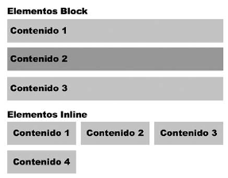

Como hemos mencionado en el capítulo anterior, los navegadores crean una caja virtual alrededor de cada elemento para determinar el área que ocupan. Para organizar estas cajas en la pantalla, los elementos se clasifican en dos tipos básicos: Block (bloque) e Inline (en línea). La diferencia principal entre estos dos tipos es que los elementos Block tienen un tamaño personalizado y generan saltos de línea, mientras que los elementos Inline tienen un tamaño determinado por su contenido y no generan saltos de línea. Debido a sus características, los elementos Block se colocan de uno en uno en las distintas líneas, y los elementos Inline se colocan uno al lado del otro en la misma línea, a menos que no haya suficiente espacio horizontal disponible, como lo ilustra la Figura
Debido a sus características, los elementos Block son apropiados para crear columnas y secciones en una página web, mientras que los elementos Inline son adecuados para representar contenido. Esta es la razón por la que los elementos que definen la estructura de un documento, como <section>, <nav>, <header>, <footer> , o <div>, se declaran como elementos Block por defecto, y otros como <span>, <strong>, o <em>, que representan el contenido de esos elementos, se declaran como elementos Inline.
display Esta propiedad define el tipo de caja usado para presentar el elemento en pantalla. Existen varios valores disponibles para esta propiedad. Los más utilizados son none (elimina el elemento), block (muestra el elemento en una nueva línea y con un tamaño personalizado), inline (muestra el elemento en la misma línea), e inline- block (muestra el elemento en la misma línea y con un tamaño personalizado). Los elementos estructurales se configuran por defecto con el valor block, mientras que los elementos que representan el contenido normalmente se configuran como inline. Si queremos modificar el tipo de elemento, solo tenemos que asignar la propiedad display con un nuevo valor. Así, las antiguas versiones de navegadores no reconocen los nuevos elementos incorporados por HTML5 y los consideran como elementos Inline por defecto. Si queremos asegurarnos de que estos elementos se interpreten como elementos Block en todos los navegadores, podemos declarar la siguiente regla en nuestras hojas de estilo.
Los elementos estructurales se configuran por defecto con el valor block, mientras que los elementos que representan el contenido normalmente se configuran como inline. Si queremos modificar el tipo de elemento, solo tenemos que asignar la propiedad display con un nuevo valor. Así, las antiguas versiones de navegadores no reconocen los nuevos elementos incorporados por HTML5 y los consideran como elementos Inline por defecto. Si queremos asegurarnos de que estos elementos se interpreten como elementos Block en todos los navegadores, podemos declarar la siguiente regla en nuestras hojas de estilo.
La propiedad display cuenta con otros valores además de block e inline. Por ejemplo,
el valor none oculta el elemento. Cuando este valor se asigna a un elemento, el documento se
presenta como si el elemento no existiera. Es útil cuando queremos cambiar el documento
dinámicamente desde JavaScript o cuando usamos diseño web adaptable para diseñar nuestro
sitio web, como veremos en próximos capítulos.
Lo básico: el valor none para la propiedad display elimina el elemento del
documento. Si lo que queremos es volver al elemento invisible, podemos
usar otra propiedad CSS llamada visibility. Esta propiedad acepta los
valores visible y hidden . Cuando el valor hidden se asigna a la
propiedad, se generan el elemento y su contenido (ocupan un espacio en la
pantalla) , pero no se muestran al usuario.
Otro valor disponible para la propiedad display es inline-block. Los elementos Block
presentan dos características, una es que producen un salto de línea, por lo que el siguiente
elemento se muestra en una nueva línea, y la otra es que pueden adoptar un tamaño
personalizado. Esta es la razón por la que las propiedades width y height estudiadas
anteriormente solo trabajan con elementos Block. Si asignamos estas propiedades a un
elemento Inline como <span>, no ocurre nada. Pero la propiedad display ofrece el valor
inline-block para definir un elemento Inline que puede adoptar un tamaño personalizado.
Esto significa que los elementos Inline-Block se posicionarán uno al lado del otro en la misma
fila, pero con el tamaño que queramos.